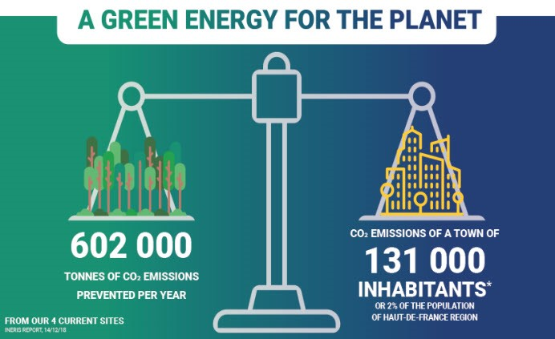

When coal mining operations ended in northern France in 1990, methane continued to be produced from disturbed layers of rock, reaching a peak of approximately 65 million cubic meters of methane annually in the early 1990s. This represented a source of greenhouse gas emissions and a significant, readily available supply of energy.
La Française de l’Energie (LFDE) assessed and identified practical options to recover and utilize the gas from Northern France’s abandoned coal mines. With this information and a dedicated feed-in tariff and VAT reduction implemented as part of a 2016 policy support mechanism for Abandoned Mine Methane (AMM), LFDE has successfully launched projects at four sites to utilize AMM for heat production, electricity generation, and pipeline injection.
LFDE entered into a strategic partnership with district heating operator, the Dalkia Group, to supply green, locally produced energy to the City of Béthune. LFDE, via its Gaznor subsidiary, captures AMM from former coal mines and transports it through a short distance pipeline,  supplying energy to both the cogeneration unit operated by LFDE and the district heating network of Béthune.
<>The partnership aims to:LFDE currently has four active AMM capture sites in Northern France and has implemented an additional power and heat generating AMM capture site in Wallonia, Belgium. They are also reviewing sites in Germany, Poland, Slovakia, Czech Republic, and Ukraine for potential project implementation.
LFDE tracks project success by evaluating three key performance indicators:
Based on currently active AMM capture sites in Northern France, annual methane emissions reductions for LFDE’s project are estimated at 602,000 TCO2e.
To learn more about the project, check out this video: